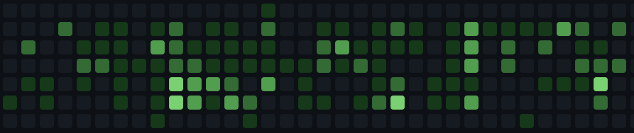
I'm a Principal Software Engineering Manager at Tenstorrent, where I lead the LLM inference team. We work on making large language models run fast and reliably on Tenstorrent's hardware - optimizing for latency, throughput, and accuracy while keeping the whole stack open source.
My team owns Llama-3.1-8B and Gemma-3-27B across all Tenstorrent device configurations, making them work in production for customers.
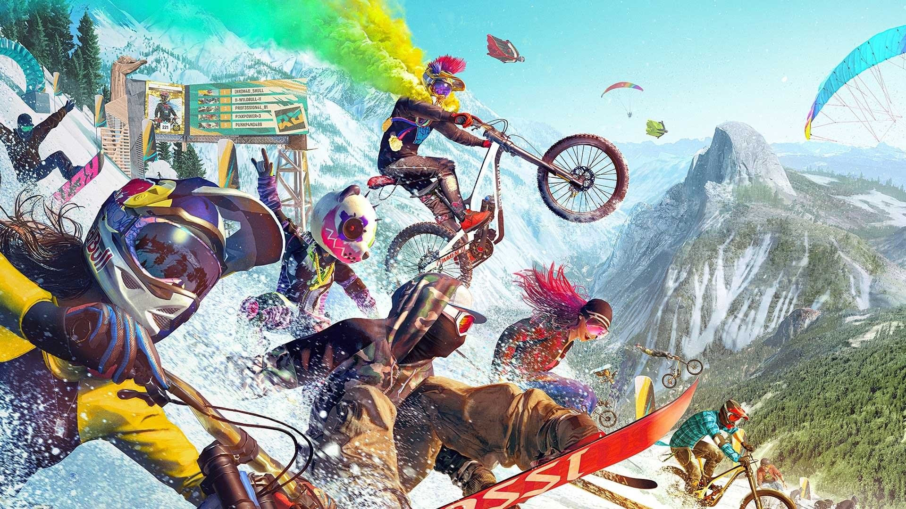
I spent 9 years at Ubisoft shipping AAA games. Started with three major titles and their live updates, then shifted to building something new - Ubisoft's first machine learning framework for in-game bots.
That ML framework shipped in several big titles: Rainbow Six Siege, For Honor, Star Wars Outlaws for combat and navigation. We also used it internally on Assassin's Creed and Far Cry for animation pipelines and automated gameplay testing.
The project I'm most proud of is Riders Republic, a massive open-world multiplayer game where I was technical lead for PC and cloud platforms. I owned the gameplay systems and PvP modes that millions of players ended up using. Seeing that many people interact with systems you built is pretty wild.
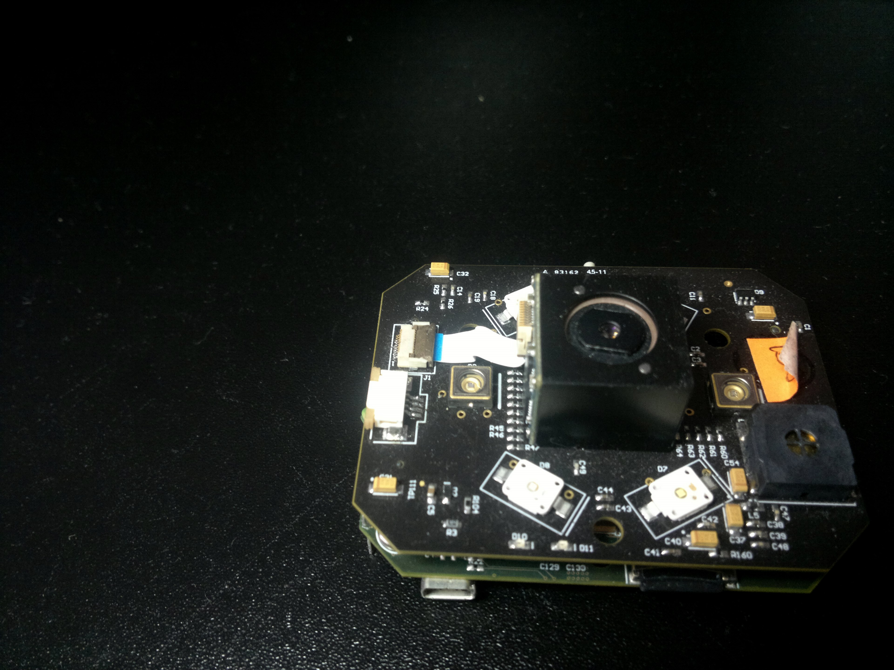
In my early career I worked on embedded systems & low-level software.
At Intel, developed imaging algorithms and performance-critical firmware on custom ISP/DSP hardware, working close to the metal on VLIW architectures.
I was the 4th employee at HTEC, as the company was just starting.
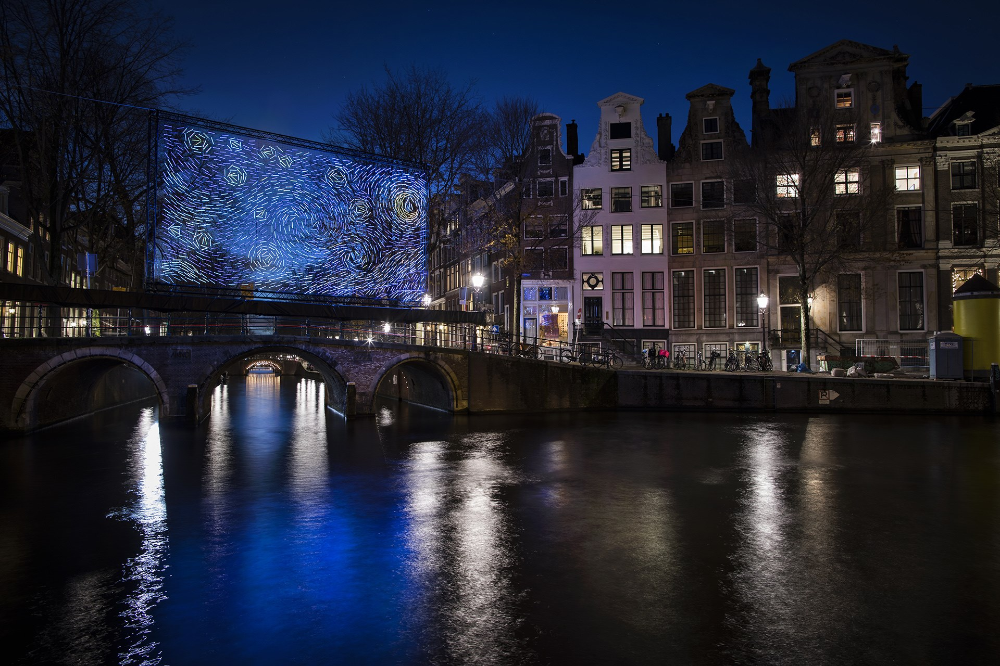
In 2018, I collaborated with architect Ivana Jelić on Starry Night, a light installation inspired by Van Gogh. It premiered at Amsterdam Light Festival and went on to shows in Shanghai, Grand Rapids, and other cities over the following years.
References:
dezeen ·
designboom ·
amsterdam light festival
Photos: Janus van den Eijnden
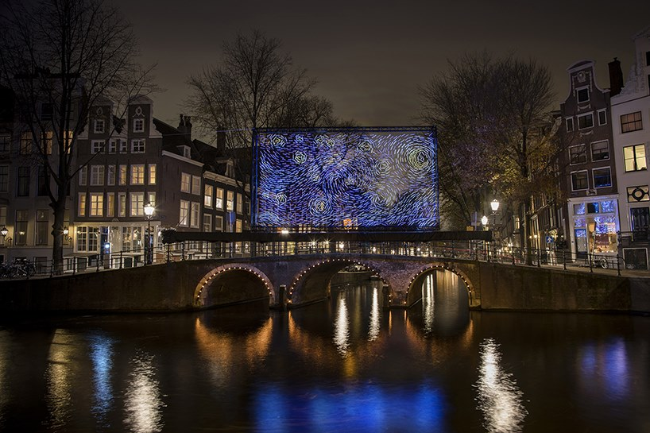
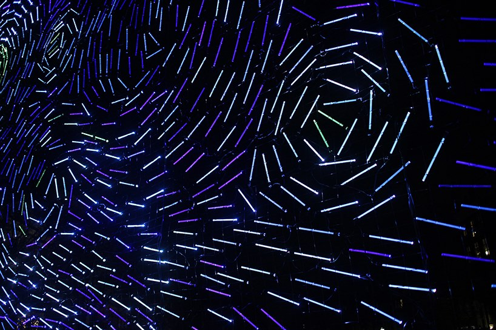
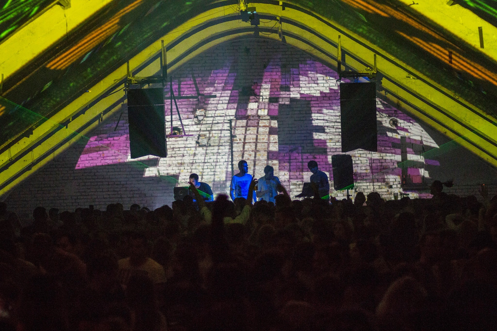
For 15 years, I was part of Kišobran - an organization I co-founded in 2008 to promote independent culture in Belgrade. We organized parties and events showcasing local artists: designers, photographers, bands, performers. I led the events side and DJ'd for a few years, then shifted to stage design and live VJing.
The VJ work opened up bigger stages. We performed at Exit Festival's main stage (this was when it was the biggest festival in the region), supported international DJs when they came through Belgrade (Oscar Mulero, Green Velvet, Carl Craig, Marko Nastić), and worked events like Prodigy's Warrior Dance festival. For years, we also handled visuals for Belgrade Jazz Festival.
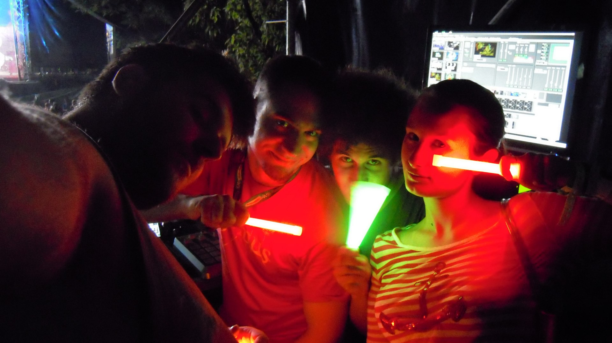
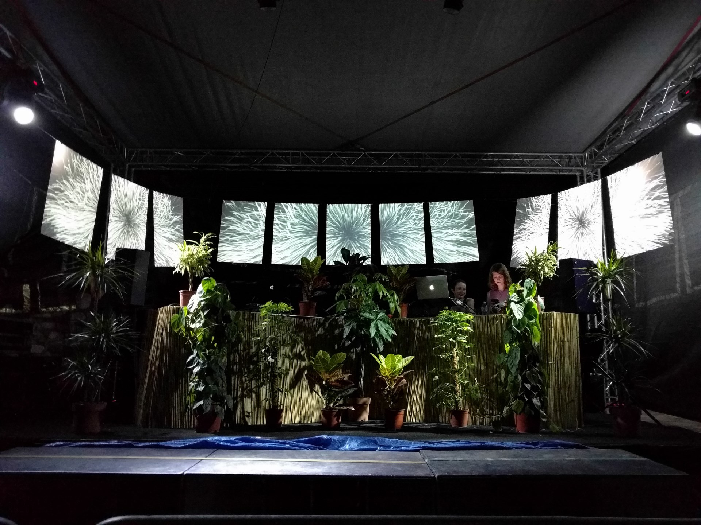
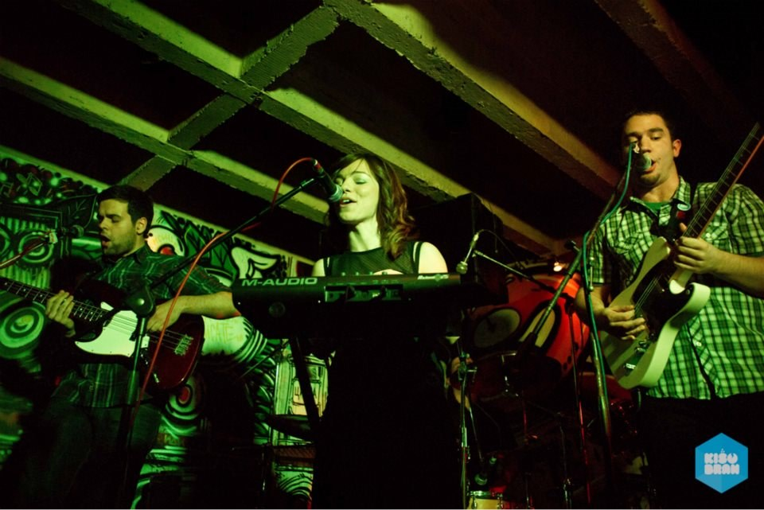
From 2008 to 2014, I was in Thank You Baudelaire, an indie-pop band. We released an EP and LP (available on streaming) and had a music video premiere on MTV Adria.
I've also been playing in April O'Neil sa kanala 6, an indie-rock cover band playing Arctic Monkeys, Franz Ferdinand, The Hives, The Strokes, and similar.
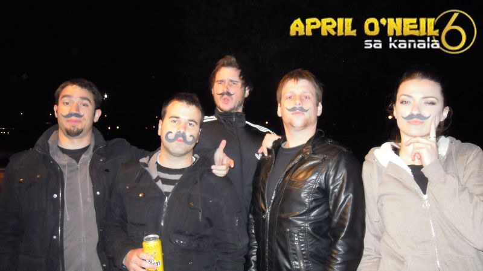